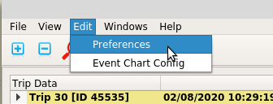

The application has a number of configurable parameters; these are held in Json format in a file called etscrape.json. The configuration parameters include parameters for logging and colours for formatting Trip Data, and the Speed Plot and Events Chart displays. Configuration is also included for the naming of INPUT event channels as displayed in the Trip Data pane.
If the configuration file is not found a default file will be created. Similarly, if the version of the configuration file is less than the required version the file will be overwritten with default values when the application is started.
Configuration values can be changed directly in the Json configuration file, although care should be taken if doing so.
User Interface preferences can be changed from within the application by selecting the "Edit / Preferences" menu item.
Selecting the "Edit / Preferences" menu item will launch a dialog where all UI parameters can be changed and saved.

Editing numeric fields will limit entry to an allowable range. To change a configuration item colour, select the adjacent shaded button which will present a colour selection dialog from which a colour can be selected.
Selecting "Save" on the Edit Preferences dialog will save all preferences to the application configuration file. For changes affecting the UI the application will rerender loaded trip data so that the changes can take effect.